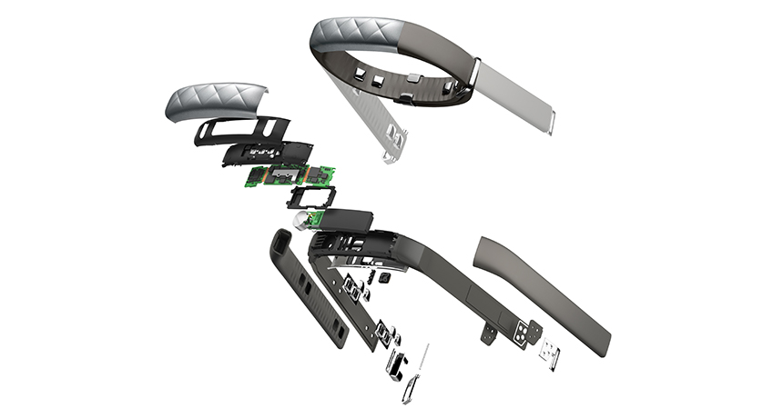
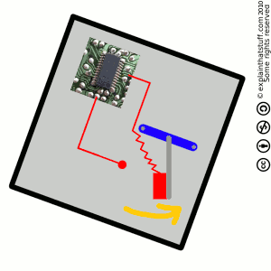
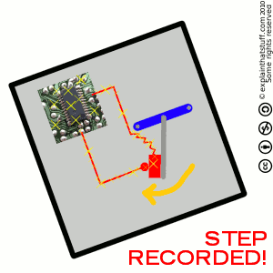
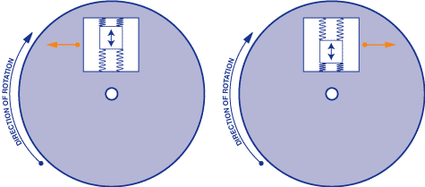
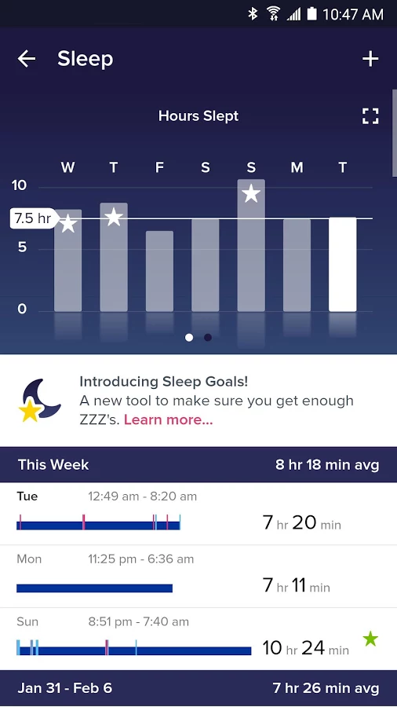

This was originally published in the March’17 issue of MCUG newsletter
Health has become a primary concern for many. From taking a walk to joining a gym, everyone is levelling up their fitness. With entrance of devices like Apple watch and Fitbit, you can now keep track of calories burned, stairs climbed, distance run, weight lost etc. And while these devices look tiny and unimpressive apart from the outer looks, there is a lot that goes into these devices to tell you your stats. It rocks sensors like OHRM,accelerometer, bioimpedance sensor, GPS etc., all while housing it in an aesthetically neat looking package. Let’s look into each of them and how they work.

Optical Heart Rate Monitor (OHRM)
At the heart of any fitness program is cardio training. Many trackers have OHRM to sense your heart rate and give you your cardio zone just by a single tap. They also provide cardio fitness levels to compare with others in your age category. Now, any movie lover would have seen big heart rate sensors with a monitor showing the pulse with the famous “beep”. So, how do you take something this big and put it on your wrist? This is where OHRM comes in. Unlike the traditional sensor which records electrical activity of the heart, this uses optics to measure heart rate. It generally has two LEDs and a sensor in the middle. LEDs shine light pulses through the skin and the light bounced back is examined by a Digital Signal Processor (DSP) which computes the light refracted and the data is converted to 1’s and 0’s. The technical term of this process is called photoplethysmography (PPG). Optics comes at some cost though. It is not as accurate as ECG and its response time is less.
Bioimpedance Sensor
Alternative to OHRM is bioimpedance sensor. They give you more accurate cardio readings. It covers three bases: Heart rate, respiration rate and galvanic skin response. For those who don’t know, galvanic skin response is the change in skin conductivity. It is tied to the sweat gland. Which means that the skin becomes more conductive, the more you sweat. It has tiny electrodes which measure tiny impedance changes created by volume of blood flowing in the arteries. Data in analysed to find respiration and hydration by looking into metrics like oxygen in blood.
Altimeter
Not every athlete prefers a straight road. Some prefer going hiking or climbing mountains. Some trackers have the ability to show you your altitude. The sensors that measure altitude are called altimeter. Altimeters were invented to aid aircrafts to detect altitude when it could not be estimated visually, like in foggy conditions. They are now used in trackers which measure steps/floors climbed. They work by measuring the change in pressure with respect to sea level. Here is a simplified algorithm of for counting floors climbed: Steps + rising altitude (10 feet ≈ 1 floor) = floors climbed No movement + rising altitude = elevator
Pedometer
Walking/Jogging/Running are the basics in any fitness plan. Activity trackers measure this as step count. Steps are measured using sensor called Pedometer. Pedometers are not new to fitness tracking. In fact it was available in few shoes even before wrist mounted wearables came into market. Pedometers counts the steps taken by measuring the motion of person’s hands or hips. To understand how it works, we need to understand how body behaves when we walk. When we lift a leg, the body tilts to one side. When we lift the other, the body tilts to the other side. Pedometers work by counting the swings of the body. You can think of it as a pendulum which completes the circuit when it swings back to one side.
 
Accelerometers are used instead of pedometers now a days as they are more accurate than pedometers.
3-Axis Accelerometer
High interval training requires you to switch between slight jog to sprints. Just measuring steps aren’t enough if your tracker cannot differentiate between Jog or Sprint. Here is where accelerometer comes in. It is responsible for differentiating between light jog and sprint. It measures your acceleration in three directions. You might wonder how do electronic devices measure something mechanical like acceleration. Answer is micro-electro-mechanical sensors (MEMS). They have two varieties 1. Capacitive and 2. Piezoelectric. But let’s not go into that. The basic principle of operation between MEMS is that a small proof mass is etched onto the silicon surface of IC and is suspended by small beams. It measures the displacement of the test mass. You can think of it as mass on a spring. Acceleration is measured when the mass is displaced. It works on the principle of F=ma.
Gyroscope
One of the function of the tracker is to light the watch face when it is tilted towards you. It is also used in mobile phones to change orientation of screen depending on the tilt. This is possible due to sensor called as gyroscope. It senses rotation of the device. It is similar to accelerometer. It works on the principle that angular momentum changes on direction of torque. Here the mass’s angular velocity/acceleration is analyzed.

GPS
When you are preparing for marathons, step count aren’t enough. You need to be able to be able to see the distance covered in a particular time. It is possible due to GPS present in trackers. Some trackers have inbuilt GPS while others use phone’s GPS using bluetooth. GPS requires 3 satellites. The satellites transmit the exact time the signals are sent. The satellites circle the earth twice a day in precise orbits. The receiver calculates the position by subtracting the time between each satellite and using the knowledge of the exact position of satellites at any point in time. While distance can be calculated by step count and stride length, GPS is used for better accuracy in distance calculation.
Software
Here is where trackers diverge. Software is what brings it all together. It is a closely guarded secret of the companies. It is responsible for getting the data from sensors, filtering out the noise and calculating it to give the readings. It is also responsible for getting your heart rate and accelerometer data to find out whether you are sleeping, a process called as Actigraphy. It calibrates steps to distance when GPS is available. So when GPS is unavailable it makes the sensor reading better. It reads your profile like gender, age etc and your heart rate to measure the calories burned per minute. Its another responsibility is to gamify your experience by pitting you against your friend, giving you a benchmark to compare, send you on virtual quests etc. It serves as a motivator by letting you set goals, track performance and providing scores like VO2 max(Measuring maximum volume of oxygen an athlete can use).
Actigraphy
Fitness is not the only thing that trackers measure. They also measure how much you have slept and its quality. The correct term for this is Actigraphy. Actigraphy is the continuous measurement of activity or movement with the use of a small device called an actigraph. It monitors movement and can be used to assess sleep-wake cycles, or circadian rhythms, over an extended period of time. It uses accelerometer to record motion.

Conclusion
Fitness tracking is already a million dollar industry. With research in health technology, the sensors are expected to get more accurate and smaller. The data recorded will also aid medical sciences. They will be able to get more insights and provide accurate diagnostics to their patients. Only thing that remains is for you to adopt it and get moving.
References
http://www.explainthatstuff.com/how-pedometers-work.html https://www.wareable.com/fitness-trackers/how-your-fitness-tracker-works-1449 https://www.verywell.com/what-is-actigraphy-3015130 https://jawbone.com/blog/up3-advanced-multi-sensor-technology/ https://www.dimensionengineering.com/info/accelerometers https://www.quora.com/How-does-Accelerometer-and-Gyro-sensor-work-in-digital-gadgets https://www.youtube.com/watch?v=9eSnxebfuxg https://www.youtube.com/watch?v=cK3bAstRghw http://www8.garmin.com/aboutGPS/ https://learn.sparkfun.com/tutorials/gyroscope/how-a-gyro-works https://www.verywell.com/what-is-actigraphy-3015130 https://lh3.googleusercontent.com/vjPHEDo0oAbBT9-yo4fE8G2kjuSA8WypvzWK2WV-c50XGEVfTv1lyc3KyP0Erp6tQ=h900-rw